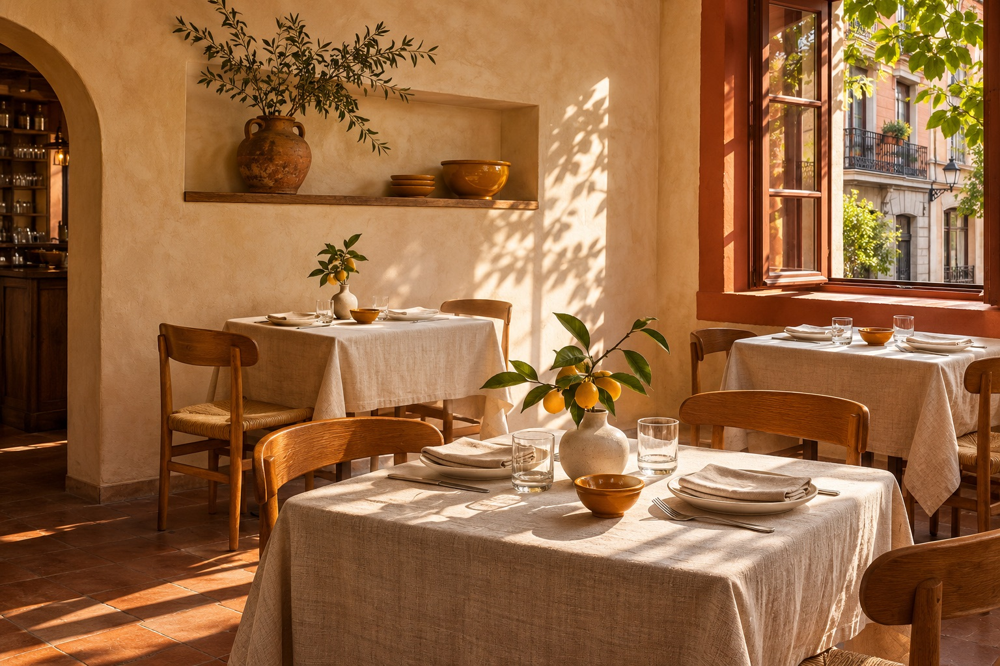

Cocina de temporada · Madrid
La mesa está puesta.
Verduras de temporada, pan para mojar y sobremesas largas en Chamberí.

El comedor
Un sitio
en Chamberí.
Madera, lino y luz que cambia a lo largo del día. Un comedor de barrio para comer a gusto y quedarse un rato más.
Reserva de demostración
Mesa para…
Prueba cómo sería elegir una mesa para comer o cenar.